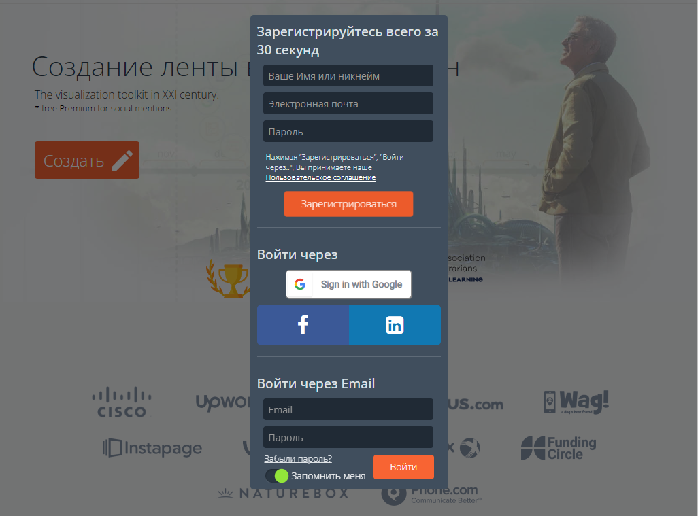

Задание 1
- изучить историю угольных предприятий Прокопьевска;
- подготовить макет итогового продукта, выделив основную информацию;
- обосновать выбор Ленты времени;
- описать не менее пяти Интернет-сервисов;
- разработать итоговый продукт
- составить описание работы с итоговым продуктом на русском и английском языках
Задание 2
1848 год - в штольне начата добыча прокопьевских углей для нужд Томского завода.
1851 год - геологоразведочная партия Быкова исследовали угольные пласты по реке Абе и другим рекам юга Кузбаса.
1897 год - промышленник Михельсон организовал Сузениские рудники.
1898 год - добыча угля для нужд Сибирской железной дороги началась с шахт государственного Ажерского рудника.
1912 год - КОПИКУЗ арендует землю.
Задание 3
- Dipity - один из самых известных сервисов. Время можно представить в разных вариантах: лента времени, книга быстрого просмотра (похоже на слайд-шоу), список или карта. Возможна совместная работа. Сервис замечательный, но временами работает очень медленно. Бесплатный аккаунт позволяет создать только 3 ленты, в каждой ленте не более 150 событий. На каждое событие можно добавить фото, видео, текстовое описание, гиперссылку.
- TimeRime. В события можно добавлять текст, видео, графику, звук (mp3). Есть возможность совместной работы. В бесплатной версии ограничение на хранение в 50 Мб, количество событий на ленте не больше 100, видео можно добавлять только с YouTube.
- WheninTime Бесплатный сервис. Есть возможность совместной работы. Каждое событие может содержать текст, изображение, видео. Создавать ленту можно "с чистого листа", на основе шаблона, существующей ленты, блога, твиттера, YouTube и др
- StoryMap JS Детище команды Timeline JS. Позволяет создавать ленты времени с привязкой к картам Google Maps. По функционалу и простоте — выше всяких похвал. Хотя сервис традиционно.
Задание 4

Рисунок 1 - Главная страница браузера
Зарегистрироваться на сайте Time.Graphics, это можно сделать через Facebook или ВКонтакте.
Задание 5
Рисунок 2 - Главная страница сайта с меню "войти".